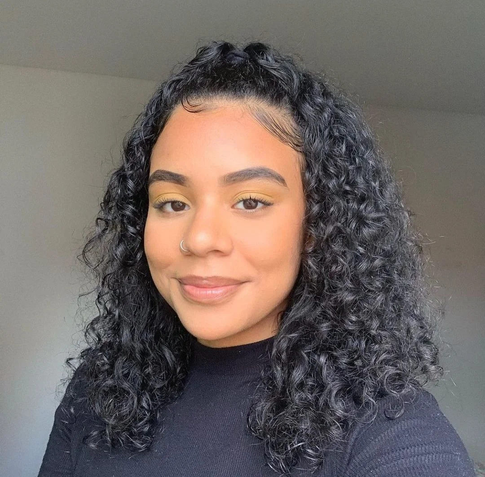

Marina Costa
Edição de vídeo
Ler a dica
Corte no movimento: faça o corte enquanto alguém se move (virar a cabeça, abrir uma porta). O movimento prende o olhar e a emenda entre os planos quase não aparece.
Premiere DaVinci
Aprenda a editar vídeo, foto e áudio com quem já edita
Clique em "Ler a dica" para abrir. São exemplos de como as dicas dos mentores aparecem.

Edição de vídeo
Corte no movimento: faça o corte enquanto alguém se move (virar a cabeça, abrir uma porta). O movimento prende o olhar e a emenda entre os planos quase não aparece.
Premiere DaVinci
Edição de fotos
Regra dos terços: divida a foto em 9 partes com 2 linhas verticais e 2 horizontais. Coloque o assunto sobre uma linha ou em um cruzamento, e não bem no centro.
Photoshop Lightroom
Edição de áudio
Fala limpa: primeiro iguale o volume das falas. Depois corte os silêncios muito longos e, por último, use o filtro de ruído com pouca força. Filtro forte deixa a voz artificial.
Audacity Reaper
Edita há algum tempo? Cadastre-se para dar dicas.